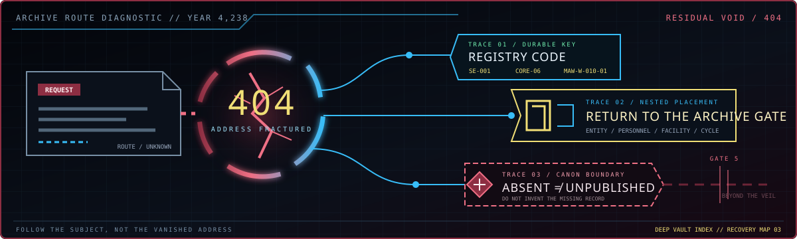

The Requested Archival Sector Cannot Be Located
The record you attempted to reach does not exist in the current Year 4,238 registry. It may have been unwritten during the 1,778 Cycles, sealed within the Deep Vault under Director authority, or lost beyond Gate 5 in the liminal expanse of the Desolate.
Recovering a Displaced Record
A missing route is not evidence that a person, event, or Sorrow Entity has been erased from canon. The public wiki is a curated layer of the larger source archive, and several older satellite URLs were consolidated into fuller primary articles. Follow the subject rather than the vanished address.

Trace the registry code
Search formal identifiers such as SE-001, CORE-06, or MAW-W-010-01. Registry codes survive title changes and lead directly to the relevant Entity, personnel, or equipment collection.
Return to its archive
Open the closest category hub when an old bookmark fails. Facility protocols belong under Departments, day records under the Cycle, and specimen records under Sorrow Entities rather than an unrelated floor.
Distinguish absent from unpublished
If no public article appears, the underlying source may still await editorial transfer. Do not invent a replacement record; consult the source map and preserve the distinction between canon and published coverage.
Recovered Fragment // Redaction ProtocolSealed · Unseal to read
This addendum demonstrates the archive's redaction protocol. Sensitive records are sealed at the source and unsealed in place when published: the sealed text remains indexed and searchable, and only the display is withheld. No unrecovered record is reproduced in this fragment. Classification: GATE WATCH / PUBLIC DEMO.